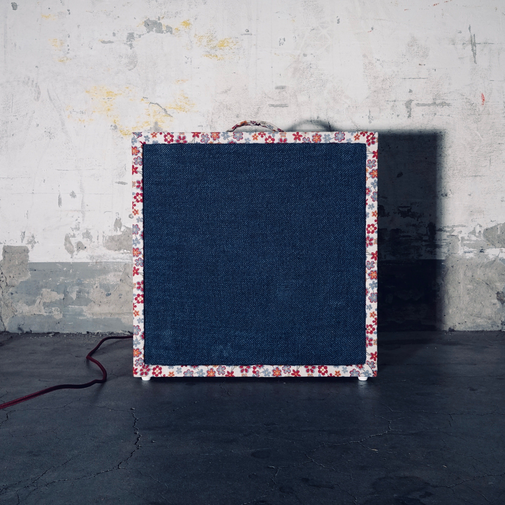
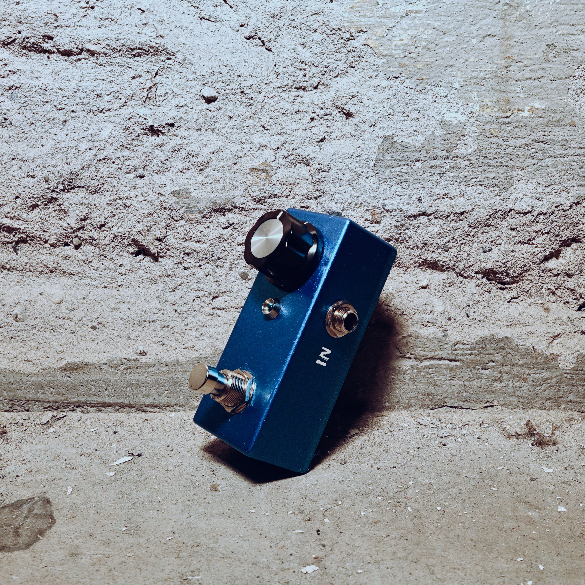
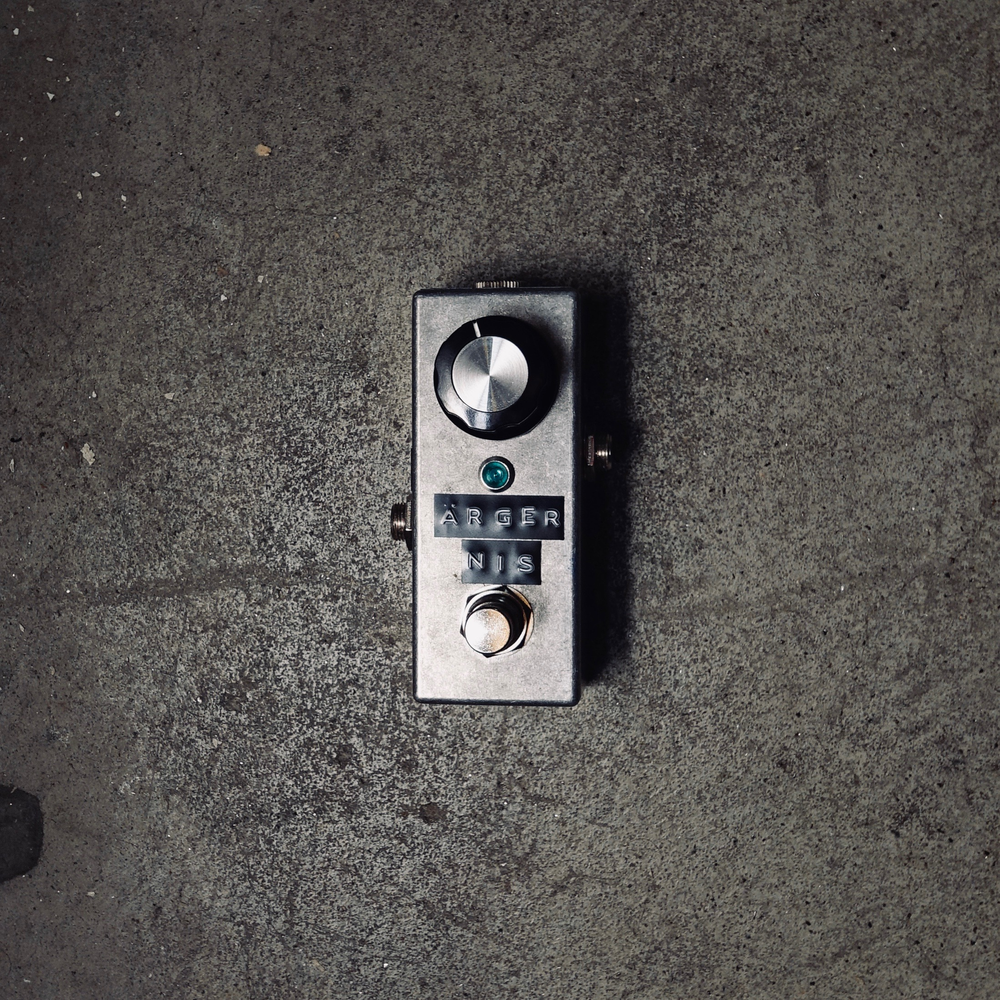
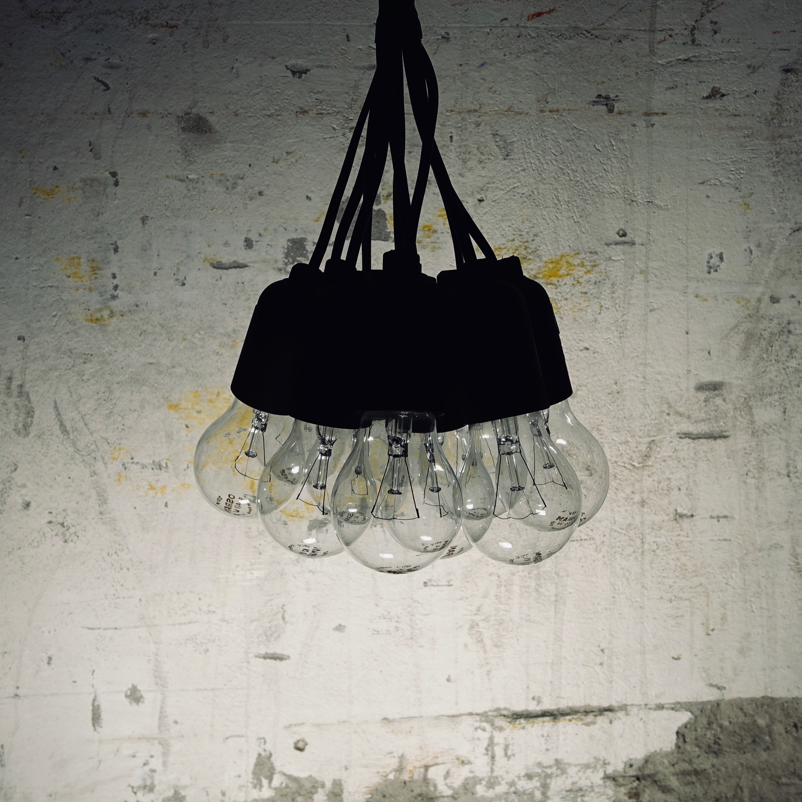
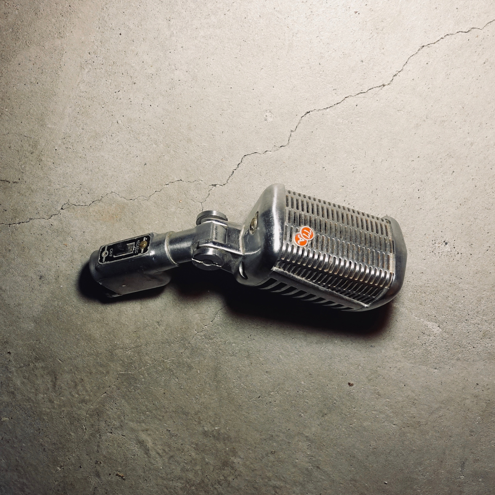
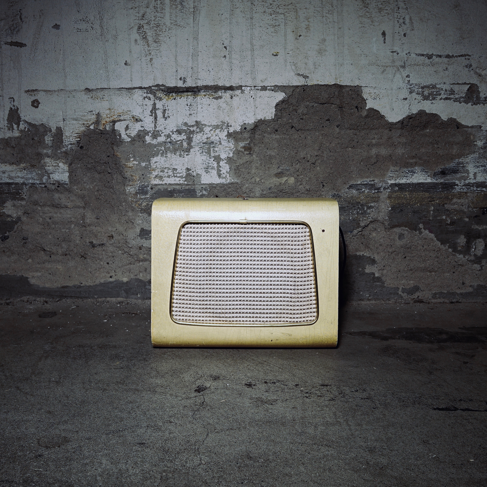
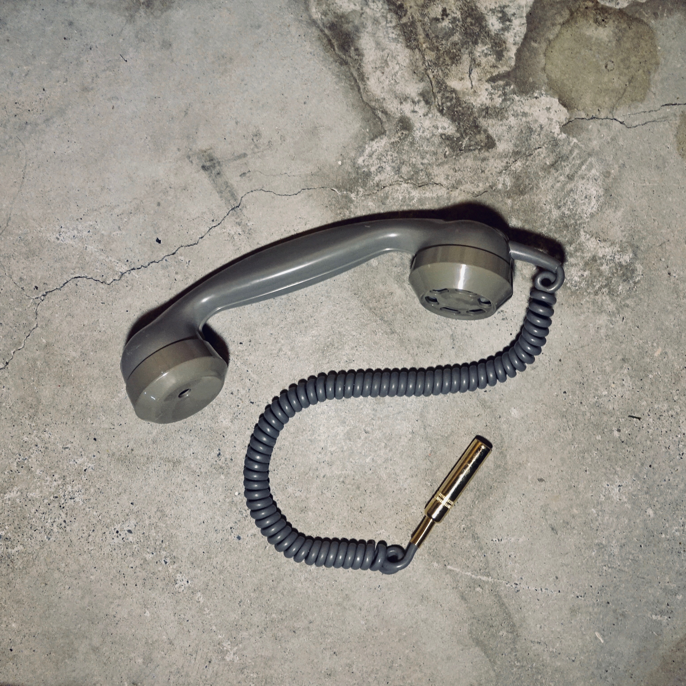

-
VERSTÄRKER
-
 SYNTHESIZER
SYNTHESIZER -
ÄRGERNIS
-
ÄRGERNIS
-
LAMPE
-
ASTATIC 77
-
LAUTSPRECHER
-
LOFI
Verstärker
Vielen Dank für die Blumen - beziehungsweise für die Röhren! Denn davon hat dieser Gitarrenverstärker eine ganze Menge. Und zwar eine 5Y3 für die Spannungsaufbereitung, je eine 12AY7 und eine 12AX7 in der zweikanaligen Vorstufe, sowie zwei 6V6GT-Leistungsröhren in der Endstufe. Die gesamte Leistung von 16 Watt wird dann mit Hilfe eines 12 Zoll Celestion-Speakers in feinste Klänge verwandelt. Die gesamte Elektronik ist, ganz gemäss der alten Schule, auf einem handverdrahteten Turret-Board untergebracht. Beide Kanäle verfügen über separate Lautstärkeregler und einen gemeinsamen Klang-Regler.

Synthesizer
Der legendäre Commodore 64 Sound kommt zurück - und zwar in Form eines Synthesizers!
Dessen Herzstück bildet der 6581-Chip von MOS Technology, der für den charakteristischen
8-Bit-Sound des C64 verantwortlich ist. Sämtliche Parameter der drei Oszillatoren, der Hüllkurvengeneratoren
und der Filterstufe können jeweils über einen eigenen Regler verändert werden. Das ganze wird schlussendlich über ein 37-Tasten-Keyboard
angesteuert.

Ärgernis - Blau
Auf der Suche nach etwas das deiner Gitarre mehr Gehör verschafft? Oder einem Helfer um deine Bandkollegen zu ärgern?
Dann sei dir dieses kleine Prachtstück empfohlen:
Das Ärgernis. Ein analoger Booster mit einem Verstärkungsfaktor von bis zu 20dB, was dir erlaubt deinem Verstärker wunderbaren Overdrive-Sound zu entlocken. Das Ganze in sehr
kompakter Abmessung, diskreter Bauweise und einfach zu bedienen. Es gibt nur einen Regler: laut bis ultra laut!
(jetzt auch in blau)
Ärgernis - Silber
Auf der Suche nach etwas das deiner Gitarre mehr Gehör verschafft? Oder einem Helfer um deine Bandkollegen zu ärgern?
Dann sei dir dieses kleine Prachtstück empfohlen:
Das Ärgernis. Ein analoger Booster mit einem Verstärkungsfaktor von bis zu 20dB, was dir erlaubt deinem Verstärker wunderbaren Overdrive-Sound zu entlocken. Das Ganze in sehr
kompakter Abmessung, diskreter Bauweise und einfach zu bedienen. Es gibt nur einen Regler: laut bis ultra laut!
Lampe
Diese zehn Glühbirnen sind so zusammengeschaltet, dass sie nicht hell stahlen, sondern angenehm gedimmtes Licht abgeben. Das perfekte für heimelige Winterabende.
Astatic 77
Eine restaurierte Rarität aus den fünfziger Jahren. Das wunderschöne Modell 77 der Astatic Corporation aus Ohio ist ein Dynamikmikrofon, welches von Grössen wie Little Richard, Eddie Cochran, Bo Diddley und sogar Elvis benutzt wurde.
Lautsprecher
Diesem Lautsprecher von 1960 der Firma Wilhelm Huber & Söhne GmbH wurde neues Leben eingehaucht. Und zwar in Form eines 2Watt-Verstärkers, einer Batterie und einem Netzteil. Diese machen die Antiquität zu einem voll funktionsfähigen portablen Lautsprecher für das mobile Musikerlebnis. Abspielgeräte lassen sich über einen 3.5mm Klinkenstecker verbinden und nach einer maximalen Laufzeit von 10 Stunden kann der Lautsprecher bequem an der Steckdose aufgeladen werden.
LoFi
Schluss mit kristallklarem Klang - Zeit für etwas Nostalgie. Dieses Mikrofon liefert den Sound aus vergangenen Tagen, den du aus den Telefongesprächen mit deiner Oma kennst, zu Zeiten da die Telefone noch Kabel hatten. Der umbebaute Hörer des legendären Modell 50 Telefons, das in allen Stuben zu finden war, verfügt über einen 6.35mm-Klinkenstecker und lässt sich so mit einem gewöhnlichen Instrumentenkabel an einem Pedalboard oder Verstärker deiner Wahl anschliessen.